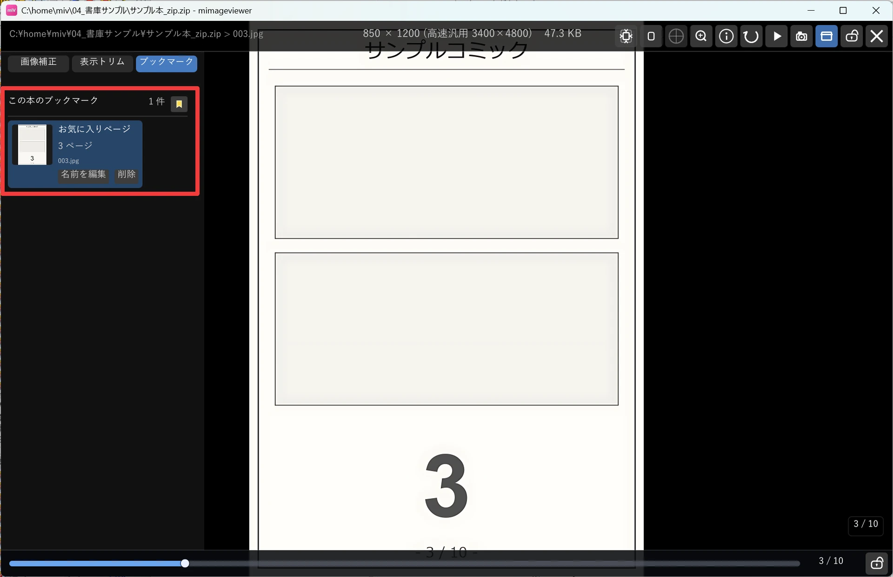
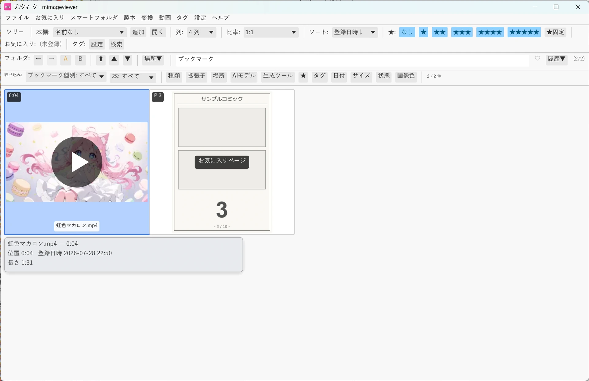

ブックマークで続きから戻る
本の途中のページや、動画・音声の再生位置に目印を付けておける機能です。 タグや★が「ファイルを選ぶ」ための印なのに対し、ブックマークは「その位置に戻る」ための印です。 付けたものは種類をまたいだ 1 つの一覧に集まるので、読みかけ・見かけをまとめて確認できます。
本のページに目印を付ける
本をフルスクリーンで読んでいるときに B を押すと、いま表示している基準ページが登録されます。 同じページを二重に登録することはありません。対象は ZIP / CBZ / PDF、対応アーカイブ、製本した本、 そして「画像のみのフォルダを本として扱う」が有効な画像フォルダです。
左パネルの「ブックマーク」タブでも同じことができます。上部の 🔖 ボタンで現在ページを登録し、 登録済みのページはサムネイル付きで並びます。行を選ぶとそのページへ移動し、 「名前を編集」で「お気に入りページ」のような名前を付けられます。

動画・音声の再生位置に目印を付ける
動画と音声でも同じ B キー、または左のジャンプパネルの 🔖 ボタンで、現在の再生位置を登録できます。 登録した位置へは J / K で前後にジャンプできます。
動画側の使い方（ジャンプパネル、チャプターやピン留めとの違い）は 動画を使いこなすで詳しく説明しています。
種類をまたいで見返す — ブックマーク一覧
フォルダバーの「場所▼」→「ブックマーク」を選ぶと、動画・音声・本に付けたブックマークが 置き場所に関係なく 1 つの一覧に集まります。1 ブックマークが 1 項目として並ぶので、 通常のサムネイル一覧と同じ感覚で扱えます。
- ダブルクリックまたは Enter で、動画・音声は登録時刻から再生、本は登録ページを開きます
- 絞り込みバーの「ブックマーク種別」で「すべて / 動画 / 音声 / 本」を切り替えられます。本はさらに「画像フォルダ / ZIP・CBZ / PDF / その他アーカイブ」で絞れます
- 並び順の既定は登録日時の新しい順です
- 名前を付けたブックマークは、サムネイルの中央にその名前が表示されます
- Delete や右クリックの削除で消えるのはブックマークだけで、元の動画・音声・本は削除されません
- 元ファイルが一時的に見つからない項目は「見つかりません」と表示されたまま残ります（外付けドライブを外しているときなど）

★・タグとの使い分け
| 印を付ける対象 | 向いている用途 | |
|---|---|---|
| ブックマーク | 本のページ / 再生位置 | 「あの場面にもう一度」「この続きから」 |
| レーティング（★） | ファイル・フォルダ | 良し悪しで段階を付けて選び出す |
| タグ | ファイル | 内容で分類して探し出す |
同じファイルにブックマークと★とタグを同時に付けても、互いに干渉しません。 「★を付けた本の、この 3 ページ」といった組み合わせもそのまま使えます。